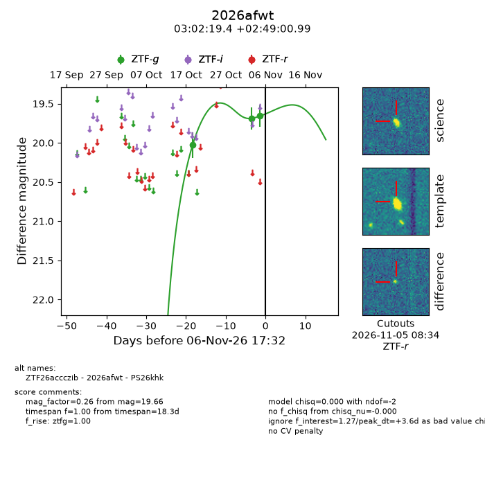
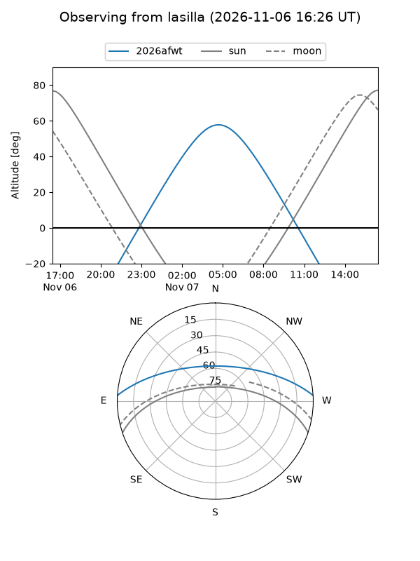
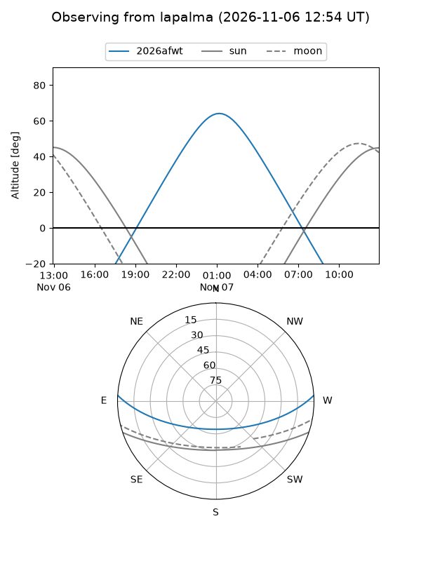
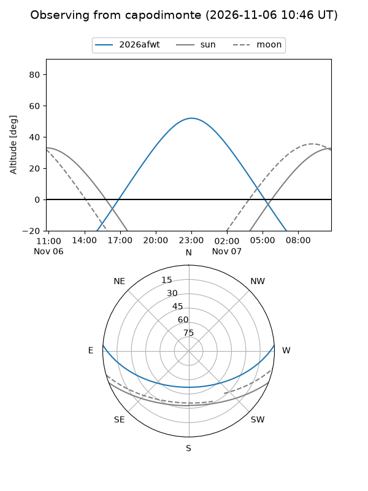
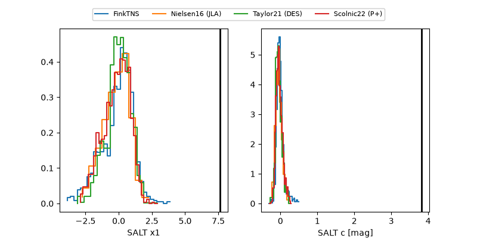

2026afwt
Target 2026afwt at 2026-11-06 17:34
Aliases and brokers:
FINK-ZTF: ztf.fink-portal.org/ZTF26accczib
Lasair-ZTF: lasair-ztf.lsst.ac.uk/objects/ZTF26accczib
ALeRCE-ZTF: alerce.online/object/ZTF26accczib
YSE-PZ: ziggy.ucolick.org/yse/transient_detail/2026afwt
TNS name: wis-tns.org/object/2026afwt
Direct TNS query: direct search
alt names
ZTF26accczib (ztf,fink_ztf)
2026afwt (tns,yse)
PS26khk (panstarrs)
Coordinates:
equatorial (ra, dec) = 45.5807,+2.81694
equatorial (HMS+DMS) = 03:02:19.38,+02:49:00.99
galactic (l, b) = (174.5985,-46.50562)
Flags:
peak dt: +3.6
Photometry:
last ztfg=19.66
3 ztfg detections
Lightcurve

Visibility



Additional plots
